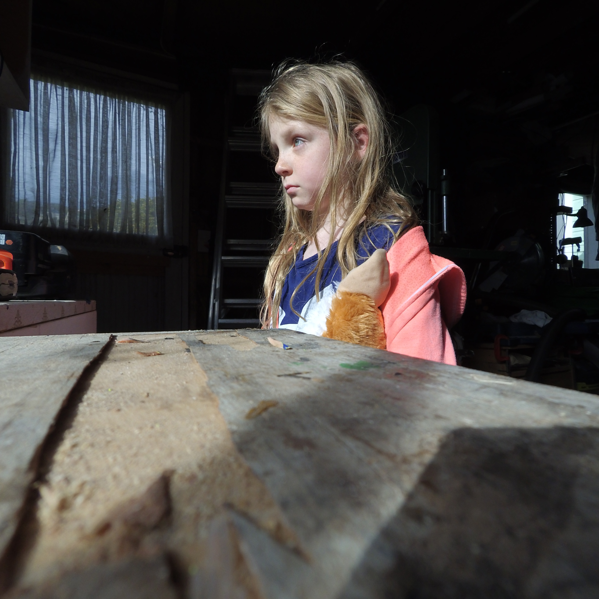
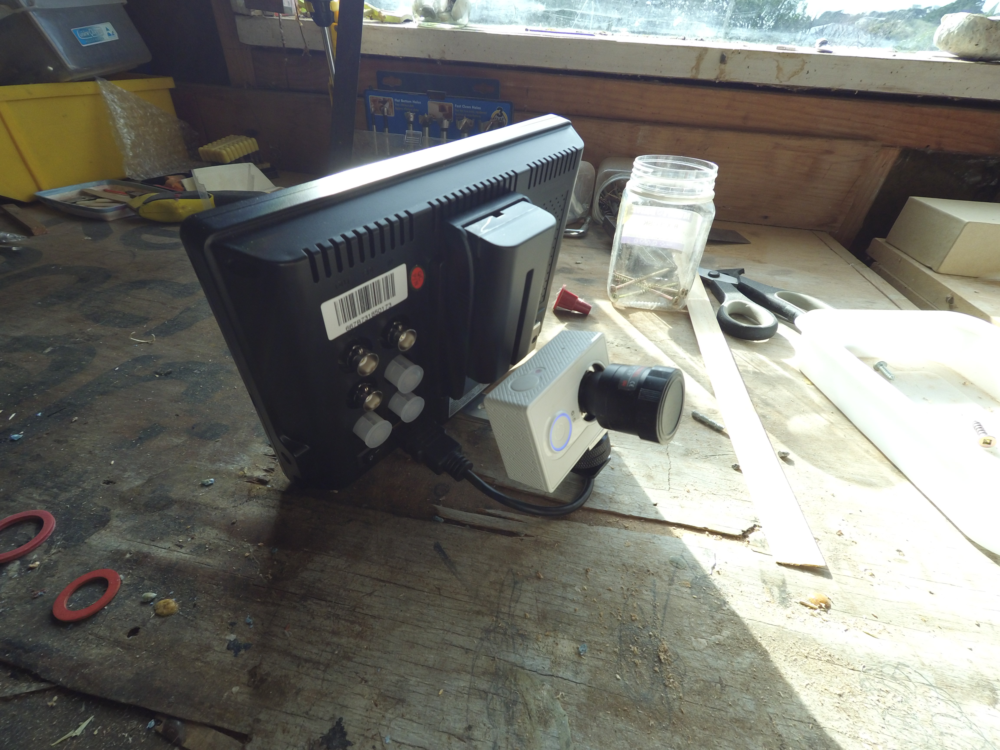

lenses p2
Continuing on from the last post…. I bought some lenses from aliexpress. Honestly, I probably could have put some more research behind my purchase and got a little more value for my dollar. That’s not to say I’m not happy. I just mean I have a feeling I might have done a bit better with more consideration.
I put some example videos on youtube. They are not particulaly clear with the youtube compression. I also wasn’t very careful when I made them. There is a lot of focusing and shaky camera. I put them up anyway. For all of these test videos, the camera is shooting 1080p60fps default, with no scripts or changes to the firmware

Here is what I got:
| # | Lens | Price | 5 Star Rating | ||
|---|---|---|---|---|---|
| 1 | 4-9mm Varifocal | $18.95 US | 3 | ||
| 2 | 10 megapixel 5.4mm | $98.00 US | 5 | ||
| 3 | 14 Megapixel 4.3mm | $29.80 US | 4 | ||
| 4 | Fisheye 1.25 | $60.60 US | 2.5? |
Number 1. 4-9mm Varifocal
As seen in the ‘pink’ pictures in the last post, the variable focal length lens did not come with an IR cut filter. I suppose I should have expected that since in the description it said “Mega Pixel Varifocal Auto Iris IR cctv lens”. I wasn’t really paying enough attention I guess.
It’s interesting without the ir cut filter but not what I set out for. I thought about how I might address this missing filter and decided the circumstance would make the perfect excuse to take apart this broken miniDV cam I have laying about, so I did. I took out the ir filter, which was in an interesting mechanical holder that would slide in an out of place, for the ‘night vision’ I figured. I took that out and popped it onto my lens and it worked pretty well to solve the ir issue. The lense itself I would not describe as cinema quality: it’s not particualrly sharp and has substantial chromatic aberration/color fringing, however I do think it will be fun to use, since it makes the camera into something that is not an action camera.
In the video you can see both without the ir cut filter, then with
This lens did not fit with the front plastic face on the camera because of the way the face flares up around the lens opening, which gets in the way of the handle to change the focal length. Since I’m reckless, I drilled out the front of my plastic face.
I made a super simple mount that holds the camera and liliput monitor and now have some kind of weird fun manual focus cam-corder.

Number 2. 5.4mm 10 Megapixel
This lens has a number of examples on youtube and vimeo. At $100USD it’s not cheap. Thankfully it’s not crappy. Very sharp and good color reproduction. Worth noting: noticable slop in the mount
Number 3. 4.3 14 Megapixel
Not as sharp as #2. Also a fraction of the cost and similar focal length. The description has it listed as “14 Megapixels” and the other at 10. I’m not sure what that references. It does not appear to be a measurement of sharpness-this one is not as sharp as #2. Color reproduction is also not as good. Still, it’s not terrible. I only have a little bit of test footage, and it’s like… “pretty good” I guess.
I’m not sure what I’m going to do with it. Since I have the “10 megapixel” lens above, I doubt I’ll reach for this one first. Same slop in the mount as #2
Number 4.
This one was a not-so-cheap-longshot. I saw several lenses that had 180degree fov or greater and I wanted to try one, and one that I thought had no crop in the final image. With that in mind, this is the one I picked. Here is where I wonder if I could have done better, since I sometimes fall victim to shopping fatigue and in the end I ‘just pick one’, and I’m pretty sure that happened when I picked all these lenses.
I need to explore this lens further. My first reaction is “wow, sure lost a lot of that sensor real estate”.
It’s also got questionable sharpness and color reproduction. Actually, it’s too soon to really say that, I’ve hardly used this. I’ll try it further and maybe update this if I get another conslusion.
I wanted this lens for a particular idea, which is to make a 3 camera directional arrangement, forward vector will have a stereoscopy, backward vector will have spherical fisheye, aligned and ‘blended’ with the primary footage, or similarly, use this for either the top or bottom view. Eventually I’ll get to executing that idea and we can then see if it was a $60 idea or not
Last week I was reading a thread here where this person is using fish eye lenses in their stereo rig effectively and it included a recommendation. Perhaps if I saw this sooner, it could have influenced my purchase
I got all of these from the same vendor on aliexpress, Focusafe Optoelectronic. I will say they made a real effort to help me get my desired lenses, asking if I required Ir cut filters (in everycase except the one labled as an Ir lens) and confirming that there were no M12 lenses with aperture control.